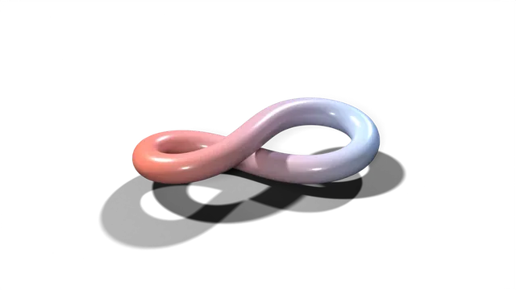

Nothing between you and the result
Controls stay live while a patch plays. You change a value and you see or hear it change.
Infinite is one canvas for pictures, sound and code. It is built so an idea can travel from your head to the screen or the speakers without you stopping to switch tools.

live shader · move the pointerMaking things should feel like thinking out loud. Too much creative software asks you to stop, change tool, export, import, and then remember what you were doing. Infinite exists to remove those stops.
The name is a promise about reach, not size. When connections are free, the number of things you can make has no obvious end.
It is free and open source, and it runs on macOS, Windows and Linux. A tool that frees people to make should not be a privilege.
Anything patches into anything.
The belief behind Infinite
- A sound moves a picture.
- A picture moves a sound.
- A line of code moves both.
The same graph serves very different work. Pick the page that is closest to yours.
A timeline puts your work in a line. A stack of menus puts it in a hierarchy. Thinking does neither: one idea leads to three others, and two of those meet again later. A patch is a map of exactly that. Each node does one job, each cable says what feeds what, and you can see the whole shape of what you are making at once.
A node graph is also a mind map. Brains are not patches, and we do not claim they are, but the comparison is useful: parts that do different jobs, joined by many connections, where the interesting results come from what talks to what.
Switch between the two views. The connections stay the same; only the names change.
Flow is the state where doing and thinking are the same act. It breaks easily: a dialog, a loading bar, a menu three levels deep, a sound that arrives late. A stream of ideas needs somewhere to land at the speed it arrives.
Infinite is designed around not breaking that stream, whether you are making music, an image or a live set. Four things are protected.
Controls stay live while a patch plays. You change a value and you see or hear it change.
Pictures, sound, 3D and code are nodes in one graph, so nothing is exported from one tool to be imported into another.
Any knob can be moved by a controller, an LFO, an envelope or the audio itself, so the instrument is played, not configured.
Start with one node, add whatever comes to mind next, and connect it. There is no fixed order you must follow.
A good instrument does what the hand means and then gets out of the way. We design the machine's part the same way: it listens, it carries the connections, it offers, and the person decides. Every result is a node you can open.
Audio Analyze turns sound into numbers a knob can follow, so a picture can lean on a bassline without a single keyframe.
Predictive nodes such as Predictive Notes and Predictive Rhythm carry on a pattern you started. You keep what you like and patch away what you do not.
Patches are plain text, so an AI agent can read and write them. Headless rendering, a Python SDK and nine MCP tools give an agent the graph you work in. The person decides what stays.
The look can change. The movement and the beliefs do not.
Press one. Each is a measured curve from the brand book, tuned so the peak of its overshoot lands on a beat at 120 BPM.
A patch is a map of how things connect, and ideas connect in more than a line. Each node does one job and each cable says what feeds what, so you can see the whole shape of a piece at once, and anything can patch into anything: a sound can move a picture and a picture can move a sound.
Flow is the state where doing and thinking are the same act. Software breaks it with dialogs, loading, deep menus and delay. Infinite keeps controls live while a patch plays, keeps pictures, sound, 3D and code in one graph, and lets any knob be moved by a controller, an LFO, an envelope or the audio itself.
Artists, musicians, VJs, creative coders and technologists, and developers who want to render from a text file or give an AI agent the same tools. Each has its own page on this site.
Yes. Infinite is free to download for macOS, Windows and Linux. The source is on GitHub under the MIT licence, and the binary is GPLv3 by default because it bundles VST3 hosting.
Yes. Patches are plain text, and Infinite can render them headless from the command line, from a Python SDK, or through nine MCP tools. The person decides what is kept.
Download Infinite, open a library patch, and turn one knob.